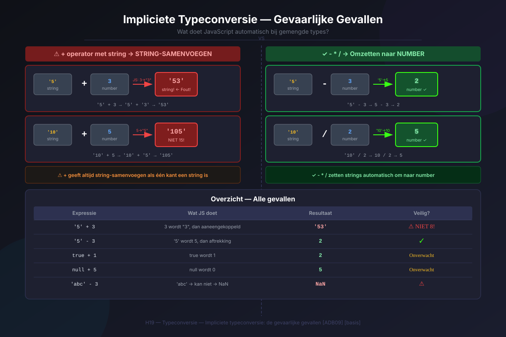
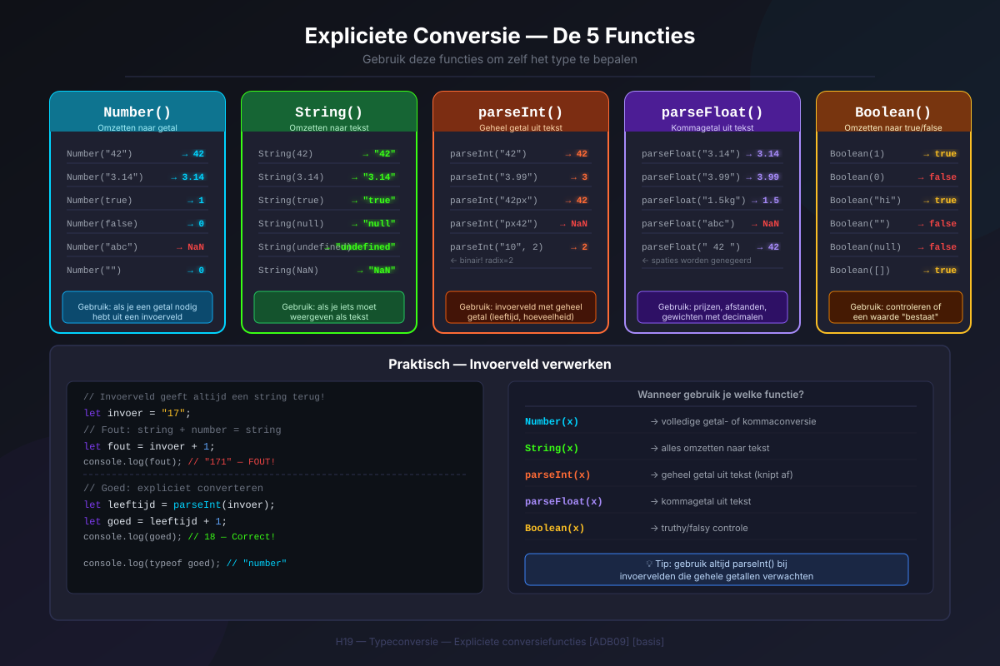
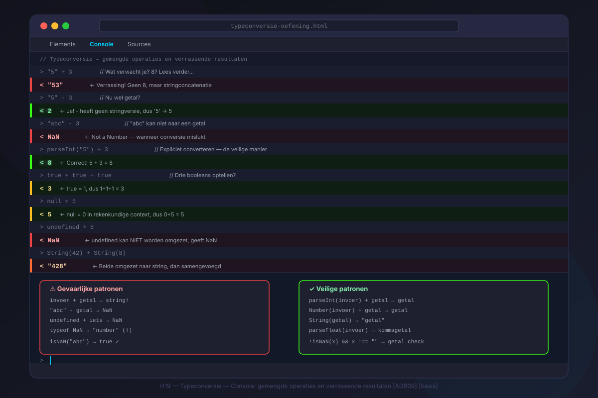

Typeconversie
- Je kan uitleggen wat het verschil is tussen zwak en sterk getypeerde talen
- Je kan beschrijven wat impliciete typeconversie is en wanneer JavaScript dit toepast
- Je kan voorspellen wat het resultaat is van bewerkingen met gemengde types
- Je kan de functies
Number(),String(),parseInt(),parseFloat()enBoolean()correct gebruiken - Je kan uitleggen waarom
parseInt()belangrijk is bij het verwerken van gebruikersinvoer
1. Zwak vs sterk getypeerd
Sterk getypeerde talen (zoals Java of Python) zijn streng: als je een getal en een tekst probeert op te tellen, geeft de taal meteen een foutmelding.
JavaScript is zwak getypeerd: de taal probeert zélf te raden wat je bedoelt als je twee verschillende types combineert.
// In Python zou dit een fout geven: TypeError
// In JavaScript niet:
let resultaat = 2 + "1";
console.log(resultaat); // "21" — geen fout, maar ook niet wat je verwacht!
2. Impliciete typeconversie
2.1 De +-operator: getal + string = string
console.log(5 + "3"); // "53" — niet 8!
console.log("5" + 3); // "53"
console.log(5 + 3); // 8 — beide number, gewone optellingDit is één van de meest klassieke valkuilen voor beginnende JavaScript-programmeurs. 5 + "3" geeft "53", niet 8!
2.2 Andere operatoren: -, *, /
console.log("5" - 3); // 2 — "5" wordt omgezet naar 5
console.log("5" * 2); // 10
console.log("10" / 2); // 5
console.log("abc" - 3); // NaN — "abc" kan niet naar een getal
2.3 Meer gevallen
console.log(true + 1); // 2 — true wordt 1
console.log(false + 1); // 1 — false wordt 0
console.log(null + 5); // 5 — null wordt 0
console.log(undefined + 5); // NaN — undefined kan niet omgezet worden3. Expliciete typeconversie
3.1 Number() — naar een getal
console.log(Number("42")); // 42
console.log(Number("3.14")); // 3.14
console.log(Number("")); // 0
console.log(Number(true)); // 1
console.log(Number(false)); // 0
console.log(Number(null)); // 0
console.log(Number(undefined)); // NaN
console.log(Number("appel")); // NaN
console.log(Number(" 42 ")); // 42 — spaties worden genegeerd
console.log(Number("42px")); // NaN — "px" maakt het ongeldig3.2 parseInt() — naar een geheel getal
console.log(parseInt("42")); // 42
console.log(parseInt("42.9")); // 42 — kommagetallen worden afgekapt
console.log(parseInt("42px")); // 42 — stopt bij "px"
console.log(parseInt("px42")); // NaN — begint niet met een cijfer
console.log(parseInt("3.14")); // 33.3 parseFloat() — naar een kommagetal
console.log(parseFloat("3.14")); // 3.14
console.log(parseFloat("3.14px")); // 3.14
console.log(parseFloat("42")); // 42
console.log(parseFloat("abc")); // NaN3.4 String() — naar tekst
console.log(String(42)); // "42"
console.log(String(true)); // "true"
console.log(String(null)); // "null"
console.log(String(undefined)); // "undefined"3.5 Boolean() — naar true of false
De falsy waarden — er zijn er maar zes:
| Waarde | Boolean() geeft |
|---|---|
false | false |
0 | false |
"" (lege string) | false |
null | false |
undefined | false |
NaN | false |
console.log(Boolean(0)); // false
console.log(Boolean("")); // false
console.log(Boolean(1)); // true
console.log(Boolean(-1)); // true — negatieve getallen zijn ook truthy!
console.log(Boolean("hallo")); // true
console.log(Boolean("false")); // true — de STRING "false" is truthy!
4. Waarom is dit belangrijk? — Gebruikersinvoer
De functie prompt() vraagt de gebruiker om iets in te typen, maar geeft altijd een string terug — ook als de gebruiker een getal intypt.
let invoer = prompt("Geef een getal in:");
console.log(typeof invoer); // "string" — altijd!
// Omzetten voor berekeningen:
let leeftijd = parseInt(invoer);
if (isNaN(leeftijd)) {
console.log("Dat is geen geldig getal.");
} else {
console.log(`Je bent ${leeftijd} jaar oud.`);
}
// Kortere schrijfwijze:
let leeftijd2 = parseInt(prompt("Hoe oud ben je?"));- MDN: Type conversions — overzicht van alle type conversies in JS
- javascript.info/type-conversions — visuele uitleg met voorbeelden
Oefeningen
Tweedelige oefening: eerst voorspellen, dan testen in de browser.
Deel 1 — Voorspel (doe dit ZONDER de browser):
Noteer voor elke regel wat het resultaat zal zijn:
console.log(5 + "5");
console.log("10" - 4);
console.log("3" * "4");
console.log(true + true);
console.log(null + "test");
console.log(parseInt("50px"));
console.log(Number(""));
console.log(Boolean(0));
console.log(Boolean("0"));Deel 2 — Test in de browser: Open de console (F12) en typ elke regel in. Vergelijk met je voorspellingen.
Deel 3 — Toepassing: Schrijf een script dat via prompt() twee getallen vraagt, omzet met parseInt(), de som berekent en controleert of de invoer geldig was.

Zoek op MDN de pagina over parseInt() op via developer.mozilla.org.
- Wat zijn de 2 parameters die je kan meegeven aan
parseInt()? Schrijf ze op met een korte uitleg. - Schrijf een voorbeeld van
parseInt()met een radix-parameter (tweede parameter) in de console. Probeer bijvoorbeeld binaire of hexadecimale getallen te parsen.
Zoek naar de sectie "Syntax" op de MDN-pagina. De radix is de basis van het getallenstelsel (2 = binair, 16 = hexadecimaal).
Huistaak
Opdracht: Eenvoudige rekenmachine met invoercontrole
- Deel 1 — Invoer verzamelen (3 punten): Vraag via
prompt()twee getallen aan de gebruiker. GebruikparseFloat()zodat kommagetallen ook werken. Sla de resultaten op in variabelen. - Deel 2 — Geldigheidscontrole (3 punten): Controleer met
isNaN()of de invoer geldig is. Toon een foutmelding viaconsole.log()als de invoer ongeldig is. - Deel 3 — Berekeningen (4 punten): Toon het resultaat van optelling, aftrekking, vermenigvuldiging en deling. Controleer of de deler nul is. Gebruik template literals voor nette uitvoer.
Vragenlijst
Controleer of je de leerstof van dit hoofdstuk begrijpt.
Wat is het resultaat van 5 + "3" in JavaScript?
Wat geeft parseInt("42px") terug?
Welke functie gebruik je om prompt()-invoer om te zetten naar een geheel getal?
Hoeveel falsy waarden zijn er in JavaScript?
Wat geeft Boolean("false") terug?
Welk type geeft de prompt()-functie altijd terug?